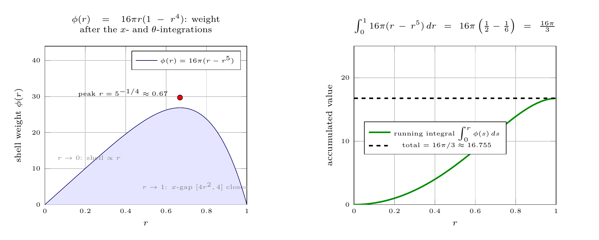

Please solve the problem in the following image.
(Image `20260927_231146_145421_utc_0800_0.png`. Alt text: Image: human_20260927_231146_145421_utc_0800)
20260927_231146_145421_utc_0800_0.png
End of problem
Answer
## Evaluating $\iiint_E x\,dV$, where $E$ is bounded by $x=4y^2+4z^2$ and $x=4$
### Step 1 — Read the geometry: which axis is the symmetry axis?
The surface $x=4y^2+4z^2$ has $y$ and $z$ appearing **only** through $y^2+z^2$. That is the signature of a
circular paraboloid whose axis is the **$x$-axis** (it opens in the $+x$ direction, vertex at the origin),
capped on the right by the plane $x=4$.
> **Rule of thumb.** Whenever two variables enter only as their sum of squares, take that axis as the
cylinder axis and use cylindrical coordinates *about it*.
So we set
$$
y=r\cos\theta,\qquad z=r\sin\theta,\qquad x=x,\qquad dV=r\,dx\,dr\,d\theta ,
$$
where $r=\sqrt{y^2+z^2}$ is the distance to the $x$-axis. In these variables the paraboloid is simply
$x=4r^2$ — one variable, no angles.
---
pgfplots_0.png
---
### Step 2 — Find the shadow (the range of $r$)
The paraboloid meets the plane where $4r^2=4$, i.e. at $r=1$. So the widest cross-section of $E$ is the
unit disk $y^2+z^2\le 1$ in the plane $x=4$, and the intersection is the circle
$\{(x,y,z):x=4,\;y^2+z^2=1\}$ (drawn in black above and to the right).
Sweeping a ray **parallel to the $x$-axis** (the green ray in the plots) it enters $E$ through the
paraboloid at $x=4r^2$ and leaves through the plane at $x=4$. Hence
$$
E=\Big\{(r,\theta,x):\;0\le\theta\le 2\pi,\quad 0\le r\le 1,\quad 4r^2\le x\le 4\Big\}.
$$
Because the bounds on $x$ involve only $r$ (never $\theta$), the $\theta$-integration is trivial and just
contributes a factor $2\pi$. This is exactly why the cylindrical choice pays off.
---
\documentclass[border=8pt]{standalone}
\usepackage{pgfplots}
\pgfplotsset{compat=1.18}
\begin{document}
\begin{tikzpicture}
\begin{axis}[
width=7.2cm, height=6.0cm, at={(0,0)},
xlabel={$r$}, ylabel={shell weight $\phi(r)$},
xmin=0, xmax=1, ymin=0, ymax=44,
grid=major,
title={$\phi(r)=16\pi r(1-r^{4})$: weight after the $x$- and $\theta$-integrations},
legend style={font=\tiny, at={(0.97,0.97)}, anchor=north east},
tick label style={font=\tiny}, label style={font=\scriptsize},
title style={font=\scriptsize, align=center, text width=7cm}]
\addplot[blue!40!black, fill=blue!10, domain=0:1, samples=80] {16*pi*(x-x^5)};
\addlegendentry{$\phi(r)=16\pi(r-r^5)$}
\addplot[only marks, mark=*, mark options={fill=red}, forget plot] coordinates {(0.6687,29.72)};
\node[font=\tiny, anchor=east] at (axis cs:0.63,31.0) {peak $r=5^{-1/4}\approx0.67$};
\node[font=\tiny, gray, anchor=west, align=left] at (axis cs:0.04,13.0)
{$r\to0$: shell $\propto r$};
\node[font=\tiny, gray, anchor=west, align=left] at (axis cs:0.46,5.0)
{$r\to1$: $x$-gap $[4r^2,4]$ closes};
\end{axis}
\begin{axis}[
width=7.2cm, height=6.0cm, at={(8.6cm,0)}, anchor=south west,
xlabel={$r$}, ylabel={accumulated value},
xmin=0, xmax=1, ymin=0, ymax=25,
grid=major,
title={$\int_0^1 16\pi(r-r^5)\,dr=16\pi\left(\frac{1}{2}-\frac{1}{6}\right)=\frac{16\pi}{3}$},
legend style={font=\tiny, at={(0.05,0.42)}, anchor=west},
tick label style={font=\tiny}, label style={font=\scriptsize},
title style={font=\scriptsize, align=center, text width=7.2cm}]
\addplot[green!55!black, very thick, domain=0:1, samples=80] {16*pi*(x^2/2 - x^6/6)};
\addlegendentry{running integral $\int_0^r\phi(s)\,ds$}
\addplot[black, dashed, very thick, domain=0:1, samples=2] {16*pi/3};
\addlegendentry{total $=16\pi/3\approx16.755$}
\end{axis}
\end{tikzpicture}
\end{document}

pgfplots_2.png
---
### Step 4 — Checks
**Order reversed (Type II, the red strip).** For fixed $x\in[0,4]$ the radius runs $0\le r\le \sqrt{x}/2$
(from $x=4r^2$): $\;\int_0^{\sqrt{x}/2} r\,dr=\tfrac12\cdot\tfrac{x}{4}=\tfrac{x}{8}$, so
$$
\int_0^{2\pi}\!\int_0^4 x\cdot\frac{x}{8}\,dx\,d\theta
=2\pi\cdot\frac18\left[\frac{x^3}{3}\right]_0^4
=\frac{\pi}{4}\cdot\frac{64}{3}=\frac{16\pi}{3}.\;\checkmark
$$
**Shell picture (why the graph above looks like that).** After the $x$- and $\theta$-integrations the
remaining integrand is $\phi(r)=16\pi\,r(1-r^4)$: it vanishes at $r=0$ (no shell area) *and* at $r=1$
(the $x$-gap closes), peaking at $r=5^{-1/4}\approx0.67$. Its area is $16\pi(\tfrac12-\tfrac16)=\tfrac{16\pi}{3}$.
**Numeric / Monte-Carlo.** Quadrature gives $16.7551608\ldots$, matching $16\pi/3$ to $\sim10^{-12}$
relative error; a Monte-Carlo estimate over the bounding box gives $16.76$. A bonus interpretation:
$\operatorname{Vol}(E)=\int_0^{2\pi}\!\int_0^1(4-4r^2)r\,dr\,d\theta=2\pi$, so the integral equals
$\bar{x}\operatorname{Vol}(E)$ with centroid $\bar{x}=\dfrac{16\pi/3}{2\pi}=\dfrac{8}{3}$ — sensibly
pushed past the mid-$x$ value $2$ toward the fat end of the paraboloid. $\checkmark$
### Answer
$$
\boxed{\iiint_E x\,dV=\dfrac{16\pi}{3}}
$$